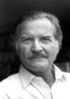

(1928 – 2012)

Bir yandan Güney Amerikalı olmanın, bir yandan da (yılların diplomatlığı sayesinde) dünya vatandaşı olmanın bilinciyle yazdığı romanlarında Carlos Fuentes, kendi büyükannesinden dinlediği öyküleri romanlaştırarak dünya çapında bir yazar olmayı başardı. ABD karşıtı olduğu için yıllarca o ülkeye sokulmadıysa da Amerikan sanat ve edebiyat çevreleri onu hep baş tacı etti.
Tam adı "Carlos Fuentes Macías" olan Carlos Fuentes (okunuşu: Karlos Fuentes) 1928 yılında Meksikalı bir diplomat olan babasının görev yeri olan Panama'da dünyaya geldi. Aile daha sonra, yine babasının görevi nedeniyle ABD'nin başkenti Washington D.C'ye yerleşti. Kışları Amerikalı gibi yaşayan Fuentes, tatillerde Meksika'daki büyükanne ve büyükbabasının yanına gidiyor; tam bir Meksikalı gibi yaşıyordu.
Sonraki yıllarda Fuentes ailesi hemen hemen tüm Güney Amerika'yı diplomatik görevle gezmeye devam etti. Bu geziler sırasında Carlos da gittikleri her ülkenin tarihini ve folklörünü öğreniyor, Latin Amerikalı olma bilincini geliştiriyordu. Yazar olmaya çoktan karar vermişti; ama ailesinin ısrarı üzerine önce Meksika'da, sonra da İsviçre'nin Cenevre kentinde hukuk okudu ve ardından da Meksika'nın Dışişleri Bakanlığı Uluslararası Kültürel İlişkiler Müdürü olarak göreve başladı.
Bir yandan da yazmaya devam eden Fuentes, Havanın Temiz Olduğu Yer romanının başarısı üzerine dışişlerinden ayrıldı ve sadece yazar olarak çalışmaya başladı. 1962 yılında çıkan Artemio Cruz'un Ölümü adlı romanı büyük oranda Carlos'un büyükanne ve büyükbabasından dinlediği Meksika tarihi hikayelerine dayanan bir kitaptı ve büyük ilgi gördü. Bu kitapla birlikte Fuentes, Arjantinli Julio Cortazar ve Kolombiyalı Gabriel Garcia Marquez'le birlikte "Güney Amerikan Baharı" denilen özgürlükçü edebiyat akımının yazarları arasında anılmaya başladı.
Fuentes, 60'larda ve 70'lerde de roman yazmaya devam etti ve İyi Bilinç (1961), Aura (1962) ve Deri Değiştirmek (1967) kitapları bu dönemde yayımlandı. Yazdıkları sayesinde tüm dünyanın takdir ettiği bir entelektüel olan Fuentes, ABD vize vermediği için uzun yıllar bu ülkeye sokulmadı. Amerikan karşıtı olduğu biliniyor, ama vizelerine verilen resmi red raporlarında bundan hiç söz edilmiyordu. Yıllar sonra bu yasak kaldırılınca Amerikan üniversiteleri Fuentes'i baş tacı etti ve ona ders verdirmenin yanı sıra çeşitli kürsüler de sundu.
1975 yılında en önemli romanlarından Bizim Toprak yayımlanınca Fuentes'in yazarlığı bir kez daha takdir topladı ve ülkesi onu Fransa'ya büyükelçi olarak (1975-77) atadı. Yazarın Yaşlı Gringo adlı kitabı Meksika Devrimi sırasında, 1913'te kaybolan ünlü Amerikalı yergi yazarı Ambrose Bierce'ın öyküsünü işliyordu ve roman 1985 yılında ABD'de çoksatanlar listesine girdi. Bu, Meksikalı bir yazarın ABD'de kazandığı en büyük başarıydı. Roman, 1989 yılında yönetmen Luis Puenzo tarafından sinemaya uyarlandı ve başrollerde de Jane Fonda ile Gregory Peck oynadı.
Yazarın sonraki romanı, Doğmamış Kristof adındaki bir çocuğun gözünden Güney Amerika'nın Avrupalılar tarafından işgalini anlatıyordu. Sonraları Diana: Yalnız Avlanan Tanrıça, Cam Sınır, İnez'in Sezgisi ve Laura Diazlı Yıllar gibi romanlar yazan Carlos Fuentes; toplam on beş romanı dışında öyküleri, siyaset yazıları ve günlük Meksiko City gazetesi La Reforma'da yazdığı köşesi ile üretmeyi hiç bırakmamıştır. Eşi televizyon gazetecisi Sylvia Lemus ile Mexico City ve Londra arasında bir yaşam süren Fuentes, 2004 yılında yazdığı Bush'a Karşı adlı kitabında Amerika'nın dış politikalarına en sert eleştirilerden birini getirmiştir.
İspanyol dilinin en önemli edebiyat ödülü olan Cervantes Ödülü'nü 1987 yılında, İspanya'da verilen Prince Asturia Ödülü'nü 1994'te alan Fuentes, 1997 yılında Fransa'nın Ulusal Liyakat Nişanı'na layık görüldü. 2006'da yayımladığı Kartalın Tahtı ve 2011'de çıkan Kader ve Arzu yazarın son kitapları oldu ve Carlos Fuentes, 15 Mayıs 2012 tarihinde öldü.
Seçme Romanları: Laura Diazlı Yıllar (Can Yayınları, 2001), Cam Sınır (Can Yayınları, 1998), Doğmamış Kristof (Ayrıntı Yayınları, 1998), Diana: Yalnız Avlanan Tanrıça (Can Yayınları, 1997), Yanık Sular (Can Yayınları, 1996), Artemio Cruz'un Ölümü (Can Yayınları, 1983), Körlerin Şarkısı (Can Yayınları), Deri Değiştirmek (Can Yayınları, 1984), İnez'in Sezgisi (Can Yayınları, 2003), Kendim ve Ötekiler (Can Yayınları, 2003), Koca Gringo (Can Yayınları), Kutsal Bölge (Ayrıntı Yayınları, 1996), Sefer (Can Yayınları, 1993), Aura (Can Yayınları, 2005), Terra Nostra - Bizim Toprak (Türkiye İş Bankası Yayınları 2005)